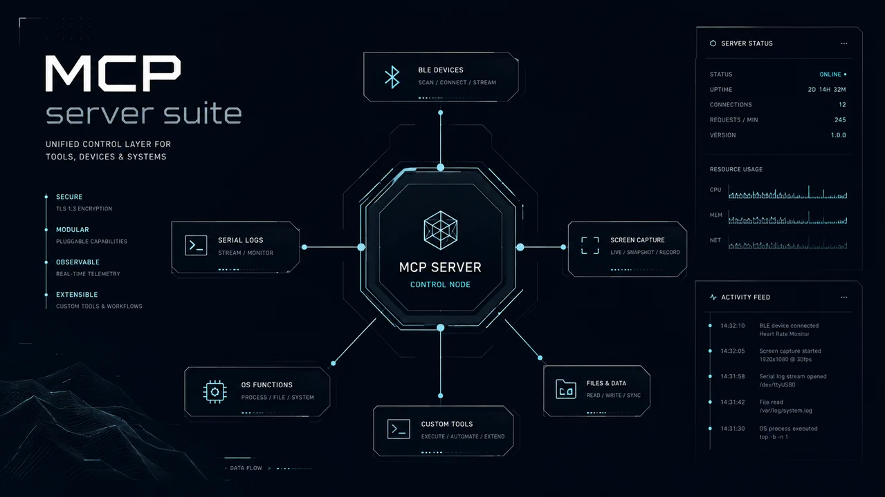
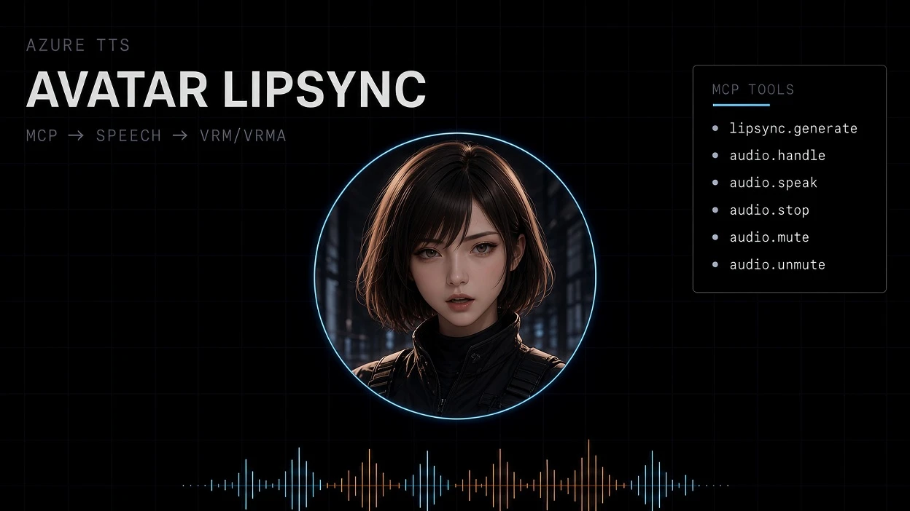
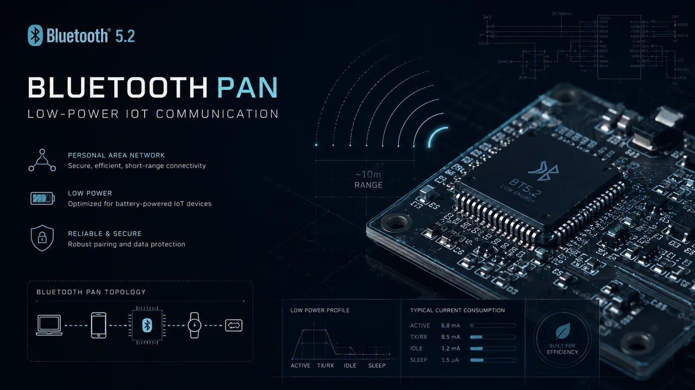
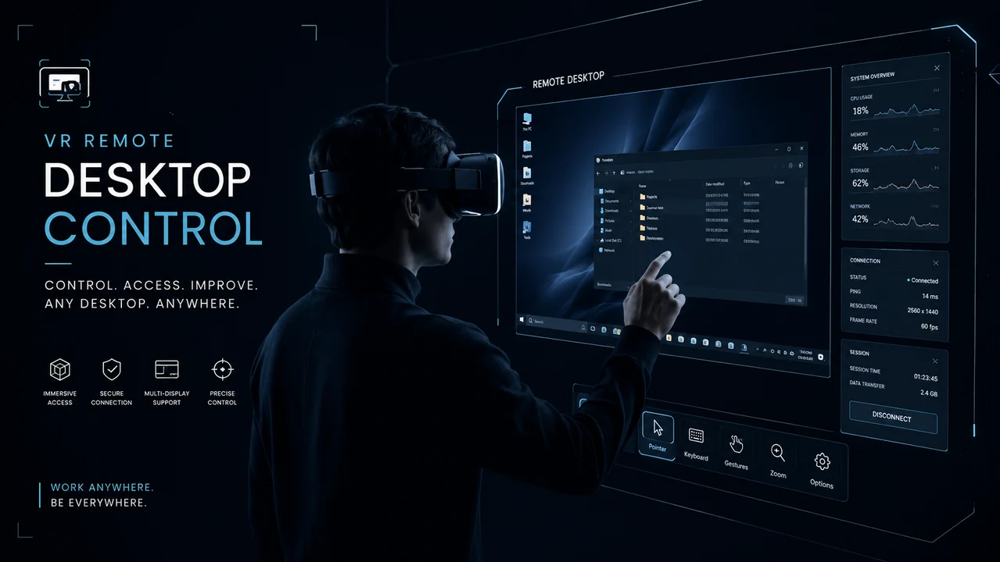
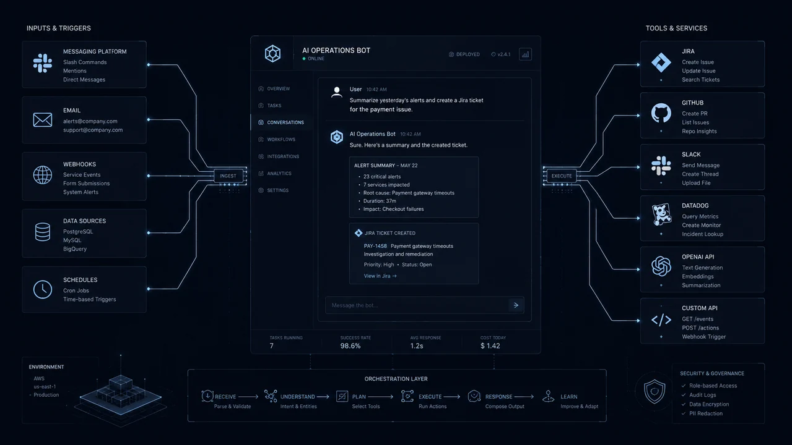
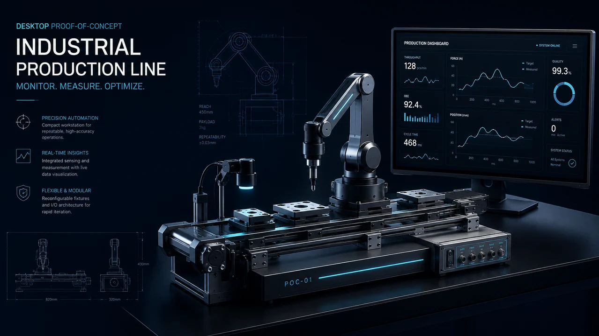
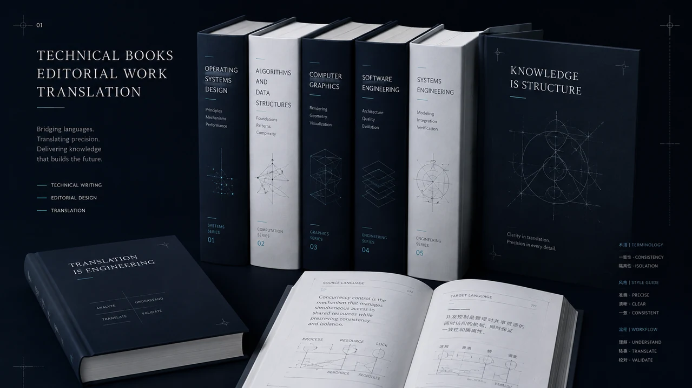

研究用ソフトウェア・検証ツールをつくる
実験・計測、センサーデータの可視化、性能比較、複数OSでの動作検証など。研究目的に合わせた道具を設計・実装します。
What I Can Take On
技術名の一覧ではなく、持ち込める課題の形で整理しています。研究の本筋ではないけれど必要になる道具や、まだ原因が分からない不具合も含みます。
実験・計測、センサーデータの可視化、性能比較、複数OSでの動作検証など。研究目的に合わせた道具を設計・実装します。
MCPサーバーなどを介して、AIクライアントからBLEデバイス、画面、シリアルログ、業務システムを扱えるようにします。
マルチエージェント、構造化出力、認証・DB・ストリーミングを含む試作まで。クラウドへの依存を減らすオンデバイス推論も扱います。
複数マイコンの協調、無線通信、省電力、クラウド連携、スマートフォンアプリまで。実機動作と引き継ぎ文書を成果物にします。
ライブラリのソース、OS設定、通信、ハードウェアの境界まで含めて、計測と仮説検証で原因を切り分けます。
Selected Work
構想・試作・実機検証・本番運用を区別し、到達点を明記しています。公開できない受託案件は、社名と機密情報を伏せています。

Rust / TypeScript / MCP
AIクライアントからBLE機器、画面キャプチャ、複数デバイスのシリアルログ監視を呼び出せるようにするI/Oアダプタ。
BLEのread/write/notify、画面・ウィンドウ取得、複数シリアルログの監視・要約、Web UI、stdio/HTTPの両トランスポートを実装。

Tauri / Rust / Azure Speech / MCP
Claude CodeなどのAI開発支援ツールに、MCP経由で声と3Dアバターの姿を与える。開発作業の進捗をTTS音声で読み上げる用途で日常的に使用。
Tauri内蔵のMCPサーバー（音声一覧・発話・VRMAアニメーション再生など）、Azure Speech ServiceによるTTS、VRMアバターのリップシンク、Windows/macOS/Linux対応。

C / ESP-IDF / BTstack
標準スタックにないBNEP・PANを実装し、スマートフォン経由のインターネット接続を確立。周期補正と電流測定方法まで設計。
SDP、SSPペアリング、BNEP、DHCP、HTTPS通信を実機確認。deep sleep復帰周期のばらつきをEWMAで予測補正。

Rust / NVENC / OpenXR
Windowsアプリの画面をHEVCで送り、VR空間のパネルとして表示・操作するリモートデスクトップシステム。
GPU上のゼロコピーエンコード、UDP映像配信、入力注入、OpenXRレンダリング、6DoF操作、ハンドトラッキングまでを実装。

Node.js / nginx / systemd
自前サーバーで常時稼働。複数LLMの切替、Web検索・画像生成、管理画面を備え、実運用で起きた停止や表示崩れにも対応。
Webhook、認証済み管理画面、OpenAI・xAI・Googleの切替、グループ内での選択的応答、Flex Messageとフォールバックを実装。

Arduino / Raspberry Pi / PLC
製造管理システムのデモンストレーション用に、搬送・加工・組立・検査・良否判定・仕分けを卓上で再現した生産ライン模型。複数マイコンの役割分担と画像・色判定を統合。
モーターPWM、PLCリレー通信、光電センサー、カメラ、カラーセンサー、サーボ制御、共通ライブラリ、引き継ぎ文書まで整備。
How I Debug
成果物だけでなく、原因へたどり着く過程も技術支援の品質だと考えています。
思い込みで直さず、リアルタイム物体検出の映像がカクつく。
「モデル推論が重いはず」と決めず、GPU推論とカメラ供給を独立に実測。
USB帯域、センサー読み出し、ウォームアップ、ドライバ設定、レンズ汚れの仮説を個別に検証。
GPUは推論能力の1/22しか使われておらず、必要なのはモデル最適化ではなく照明環境の改善だった。
Raspberry Piにつないだサーボが指定角度どおりに動かない。
配線とコードに限定せず、OS側のPWMクロック管理まで調査。
既定設定を切り分け、オーディオドライバとのハードウェアクロック競合を特定。
設定変更で解消し、再発防止のため原因と対処をREADMEへ記録。
HTTPS通信中に同じパニック表示で繰り返しクラッシュ。
スタックサイズを増やす前に、残量ログとバックトレースを取る方針へ変更。
スタック監視、不要機能停止、ヒープ確保、バックトレース解析を順番に実施。
スタック圧迫、オブジェクト寿命、切断処理による不正解放を個別に特定・修正。
Publications / Editorial Work

1990年代後半から2000年代初頭、PC・プログラミング関連書籍の監訳・監修・編集・執筆に携わりました。海外の複雑な技術を、日本の技術者が使える形へ翻訳・編集した経験は、現在の設計と開発にもつながっています。
このほか、個人名義で『Windows 95 バイブル』などの監修・監訳実績があります。
About
最初期には、Apple II向けアニメーションソフト「Fantavision」のPC-9801移植で、アセンブリ言語によるアニメーション生成エンジンを手がけました。そこから技術書の監訳・監修、組み込み、産業設備の実証機、モバイルアプリ、AIエージェントまで。領域を限定するより、複雑な技術を理解し、検証し、他者が使える形へ変換する仕事を続けてきました。現在は特に、AIをチャット画面の中に閉じず、OS・デバイス・センサー・開発環境へ接続することに関心があります。
MCPなどを介し、AIに機器・OS機能・業務システムを操作させる仕組み。
端末内で完結するLLM実行。通信・アカウント・外部APIへの依存を減らす設計。
省電力モードの実挙動を測り、カタログ値ではなく実測から設計すること。
Timeline
2024年10月から現在まで、macOS/Windows両方の作業環境に残る記録（gitコミット履歴・README・作業ログ）に加え、GitHub上の個人・cami org（自社チーム）リポジトリの活動を突き合わせて時系列に並べたものです。書籍の監修・監訳からAI・組み込みへ続く関心の流れが、直近2年で密度を増していることがわかります。
Contact
「まだ何を頼めばよいか分からない」「検証方法から相談したい」という段階でも構いません。